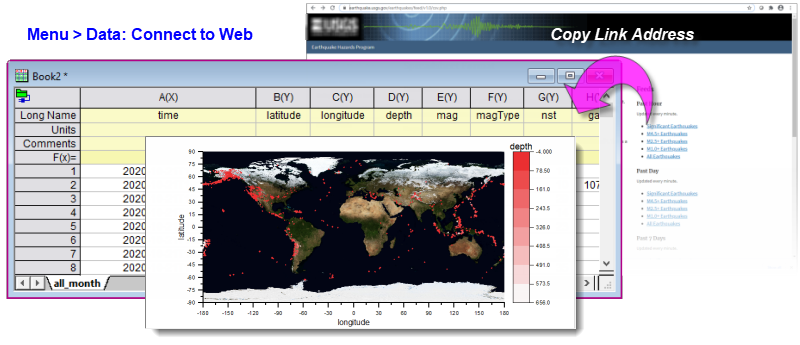
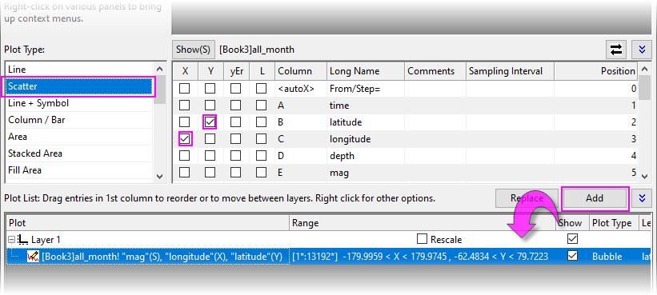
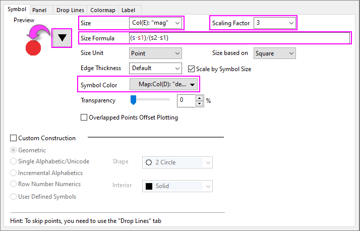
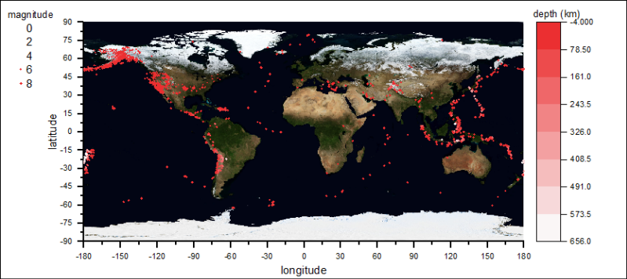
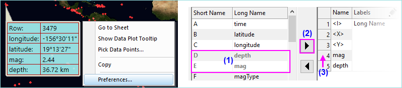
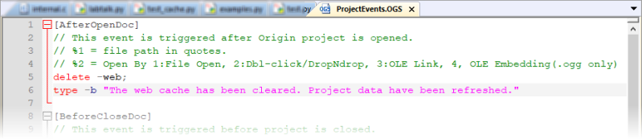

Mit Webdaten verbinden durch Kopieren der Link-Adresse
Web-Connect-Copy-Link
Zusammenfassung
Datenkonnektoren stellen eine ideale Möglichkeit dar, eine "Live-Verbindung" zu Datendateien herzustellen, die regelmäßig aktualisiert werden. Der traditionelle Dateiimport nötigt den Anwender, die Daten jedes Mal neu zu importieren, wenn die Quelldaten modifiziert werden. Wenn jedoch ein Konnektor zu einer Arbeitsmappe hinzugefügt wird, kann dieser die Datenquelle automatisch jedes Mal abfragen, wenn das Projekt geöffnet wird, wodurch die Datenverwaltung durch den Anwender sehr viel einfacher wird.
-
- 
In diesem Tutorial werden wir zeigen, wie Sie eine Verbindung zu Erdbebendaten in "Echtzeit" auf der Webseite des United States Geological Survey (USGS) herstellen, wie Sie das verbundene Projekt konfigurieren, damit es die Daten beim Öffnen automatisch importiert und wie Sie das Zwischenspeichern der Daten verwalten, so dass Sie sicher sein können, jedes Mal die aktuellen Daten beim Öffnen Ihres Projekts zu erhalten.
Origin-Version mind. erforderlich: Origin 2021
Was Sie lernen werden
- Wie Sie eine Verbindung zu einer im Web gespeicherten CSV-Datei durch Kopieren der URL herstellen.
- Wie Sie Origins kostenlose App Maps Online verwenden, um ein Hintergrundbild für geografische Daten zu erstellen
- Wie Sie den Dialog Diagrammeinstellungen mit über Datenkonnektor importierten Daten verwenden und sich dabei die Arbeit ersparen, die Spalten neu anzuordnen.
- Wie Sie ein Projekt, das einen Webkonnektor (CSV) verwendet, speichern und erneut öffnen.
- Wie Sie Origins Mechanismus zum Zwischenspeichern bearbeiten, so dass die Daten beim Öffnen des Projekts immer aktualisiert werden.
Mit der Datei der Webdaten verbinden durch Kopieren der Link-Adresse
- Öffnen Sie ein neues Projekt. Es sollte eine neue Arbeitsmappe im Arbeitsbereich zu sehen sein.
- Navigieren Sie zu dieser Seite auf der USGS-Webseite: https://earthquake.usgs.gov/earthquakes/feed/v1.0/csv.php
- In der Spalte auf der rechten Seite sehen Sie unter "Feeds" eine Liste der Links zu den CSV-Datendateien, die jede Minute aktualisiert werden.
- Scrollen Sie nach unten und klicken Sie unter "Past 30 Days" mit der rechten Maustaste auf "All Earthquakes" und wählen Sie Link-Adresse kopieren.
- Kehren Sie zu Origin zurück und wählen Sie bei aktiver Arbeitsmappe Daten: Mit Web verbinden.
- Fügen Sie die Link-Adresse, die Sie soeben kopiert haben, durch Drücken von Strg + V in das Feld der URL ein und klicken Sie auf OK.
- Übernehmen Sie alle Standardeinstellungen im Dialog CSV-Importoptionen und klicken Sie auf OK. Die Daten der USGS-Webseite werden in die Arbeitsmappe importiert. Beachten Sie die grüne Farbe des Konnektorsymbols
 . Sie gibt an, dass die Datenverbindung aktiviert ist.
. Sie gibt an, dass die Datenverbindung aktiviert ist.
Konnektor-importierte Daten mit dem Dialog Diagrammeinstellungen zeichnen
In diesem Abschnitt des Tutorials verwenden wir OriginLabs kostenlose App Maps Online, um eine Hintergrundkarte für ein Punktdiagramm von Breitengrad, Längengrad, Erdbebenstärke und Tiefe zu erstellen.
Aufgrund der "Sperrung" der mit Datenkonnektor importierten Daten können wir die Spalten nicht neu anordnen. Standardmäßig erfordert Origin, dass sich die Spalten mit den X-Daten links von den Y-Datenspalten befinden. In unserem gesperrten Arbeitsblatt befinden sich die X-Daten (longitude) jedoch rechts von unseren Y-Daten (latitude). Der Dialog Diagrammeinstellungen ist in dieser Situation die Lösung, da wir die Spalten "ganz nebenbei" zuordnen können, ohne etwas verschieben zu müssen (und die "Live"-Verbindung zu unseren Daten verlieren).
- Drücken Sie F10, um das App-Center zu öffnen. Klicken Sie auf die Registerkarte Suchen und geben Sie bei aktiver Kategorie = Alle das Stichwort "maps" im Suchfeld ein. Wenn die App Maps Online mit einem grünen Häkchen daneben gezeigt wird, haben Sie die App bereits installiert. Wenn das Symbol für Download and Install icon
 angezeigt wird, klicken Sie auf das Symbol, um die App in Ihrer Origin-Software zu installieren.
angezeigt wird, klicken Sie auf das Symbol, um die App in Ihrer Origin-Software zu installieren.
- Klicken Sie auf die Apps-Galerie (standardmäßig rechts in Ihrem Arbeitsbereich angedockt) und öffnen Sie die App Maps Online. Klicken Sie im Dialog box auf die Auswahlliste Map, wählen Sie Nasa Earth Observations (NEO) WMS und setzen Sie Layer auf BlueMarbleNG. Klicken Sie dann auf OK. Wir haben jetzt eine Hintergrundkarte zum Zeichnen unserer Erdbebendaten.
- Wählen Sie im Menü Grafik: Setup Diagramm (falls es nicht angezeigt wird, erweitern Sie das obere und untere Bedienfeld des Dialogs). Setzen Sie die Verfügbaren Daten = Arbeitsblätter im Ordner. Sie sollten nun das Blatt all-month im oberen Bedienfeld sehen. Markieren Sie das Blatt im oberen Bedienfeld.
- Setzen Sie im mittleren Bedienfeld den Diagrammtyp = Punktdiagramm und den Längengrad longitude = X und den Breitengrad latitude = Y, wie zu sehen. Klicken Sie auf die Schaltfläche Hinzufügen unten rechts im mittleren Bedienfeld. Klicken Sie auf OK, um das Punktdiagramm der Breiten- und Längengraddaten auf Ihrer Karte anzuzeigen.
- 
- Klicken Sie doppelt auf die Zeichnung, um den Dialog Details Zeichnung zu öffnen, und nehmen Sie die Einstellungen vor, die auf dem folgenden Screenshot gezeigt werden, indem Sie diese Bedienelemente der Registerkarte Symbole festlegen: Größe = Col(E): "mag", Skalierungsfaktor = 3, Größenformel = (s-s1)/(s2-s1), Symbolfarbe = Nach Punkten auf Map:Col(D):"depth". Zusammengefasst verwenden wir die Werte von latitude und longitude, um unsere Streupunkte auf der Karte zu positionieren; wir verwenden die Daten von mag (Erdbebenstärke) zum Steuern der Symbolgröße und die Daten von depth (Tiefe) zum Steuern der Symbolfarbe.
- 
- Klicken Sie auf der Symbolleiste Hilfsmittel auf die Schaltfläche Farbskala hinzufügen und klicken Sie dann auf die Farbskala, um den Dialog Steuerung der Farbskala zu öffnen. Aktivieren Sie auf der Registerkarte Ebenen die Optionen Erste Ebene ausblenden und Letzte Ebene ausblenden. Deaktivieren Sie auf der Registerkarte Layout das Kontrollkästchen Umgekehrte Reihenfolge. Aktivieren Sie auf der Registerkarte Titel das Kontrollkästchen Zeigen. Klicken Sie auf OK, um den Dialog zu schließen. Sie können auch eine Blasenskala zur Karte hinzufügen, um die relativen Symbolgrößen zu zeigen (da die Größe auf die Erdbebenstärke abgebildet wird).
- Wir können ein paar kosmetische Anpassungen an unserem Diagramm vornehmen, zum Beispiel die Einstellungen Drucken/Druckbereich verwenden, um die Seitengröße so zu verändern, dass sie besser auf das Seitenverhältnis des Kartenbildes passt. Zusätzlich können wir Achsentitel hinzufügen und Schriftarten und -größen mittels der Schaltflächen auf der Minisymbolleiste anpassen.
- 
 |
Wenn Sie die Maus über einen gezeichneten Punkt in Ihrem Diagramm bewegen, sehen Sie einen benutzerdefinierbaren Tooltipp für den Datenpunkt. Klicken Sie vorsichtig mit der rechten Maustaste auf den Tooltipp, wählen Sie Einstellungen und modifizieren Sie den Tooltipp, so dass er alle Ihre Diagrammvariablen anzeigt -- latitude, longitude, magnitude und depth, in beliebiger Reihenfolge und beliebigem numerischen Format.

|
Zwischenspeicherung der Webdaten verwalten
Datenkonnektoren wurden zum Teil entwickelt, um den Import von sehr großen Datendateien zu erleichtern. Konnektoren nutzen die Strategie, große Dateiimporte nicht zu speichern (Standard ist > 500kB) und dadurch Festplattenspeicher zu sparen. Wenn Sie eine Anzahl von verbundenen Arbeitsmappen in Ihrer Projektdatei haben, können Sie die Dateien nach Bedarf selektiv erneut mit den Dateien verbinden, so dass Sie nur die Daten importieren, auf die Sie jetzt Zugriff brauchen.
In dem Bestreben, die Anzahl an aktualisierten Verbindungen zu steuern -- immerhin ist dies zeitaufwändig und kann länger dauern -- fügten die Entwickler von OriginLab die Systemvariable @CFDT hinzu. Diese steuert die Länge der Zeit zwischen den Abfragen der Quelldaten durch den Konnektor. Daten, die über Mit Web verbinden importiert wurden, werden für einen Zeitraum im Zwischenspeicher gespeichert, der @CFDT Sekunden pro 100 kB der Dateigröße entspricht (z. B werden verbundene Daten in einer Datei von 10 MB für 900 * 100 = 90.000 s oder ~24 h gespeichert).
Außerdem gibt es einen LabTalk-Befehl -- delete -web --, mit dem der Zwischenspeicher bei Bedarf geleert werden kann. Im Rahmen unseres Erdbebenprojektes möchten wir sicherstellen, dass wir immer die neuesten Daten erhalten, deshalb nutzen wir diese Funktion.
In diesem Abschnitt der Übung konfigurieren wir unser Projekt so, dass:
-
- Die Daten automatisch importiert werden, sobald das Projekt geöffnet wird.
- Der Zwischenspeicher beim Öffnen des Projekts geleert wird, so dass wir sicher sein können, immer die neuesten Informationen zu haben.
- Wählen Sie Datei: Projekt speichern unter, vergeben Sie einen Dateinamen wie USGS_Earthquake_All_30d.opju und klicken Sie auf Speichern.
- Klicken Sie auf das Konnektorsymbol des Arbeitsblatts und wählen Sie Automatisch Importieren > Beim Öffnen des Projekts.
- Wählen Sie im Origin-Menü Ansicht: Code Builder. Der Code Builder ist Origins integrierte Entwicklungsumgebung (IDE) zum Entwickeln von LabTalk-, Origin-C- und Python-Code. Erweitern Sie im Bedienfeld Arbeitsbereich links im Dialog den Zweig Projekt und klicken Sie doppelt auf die Datei ProjectEvents.OGS. Die Datei wird in den Arbeitsbereich des Code Builders geladen. ProjectEvents.OGS ist eine spezielle Datei, die mit jedem Origin-Projekt gespeichert und verwendet wird, um LabTalk-Skript auf verschiedene Ereignisse hin zu speichern und auszuführen, wie beim Öffnen des Projekts. Wir haben bereits erwähnt, dass wir über einen LabTalk-Befehl verfügen, der zum Leeren der zwischengespeicherten Webdaten verwendet werden kann. Wir passen daher ProjectEvents.OGS benutzerdefiniert an, um eine einfache Skriptzeile auszuführen, so dass unsere Webdaten beim Öffnen des Projekts immer aktualisiert werden. Scrollen Sie nach oben bis zum Abschnitt [AfterOpenDoc], fügen Sie die folgenden zwei Skriptzeilen hinzu und klicken Sie dann auf die Schaltfläche Speichern auf der Symbolleiste des Code Builders.
delete -web; type -b "The web cache has been cleared. Project data have been refreshed."
ProjectEvents sollte in etwa so aussehen:

- Wählen Sie Datei: Speichern, um Ihr Projekt mitsamt dem Inhalt von ProjectEvents.OGS zu speichern.
- Schließen Sie jetzt Ihr Projekt und klicken Sie dann über Datei: Zuletzt verwendete Projekte auf Ihre zuletzt gespeichertes und geschlossenes Projekt. Eine Warnmeldung sollte angezeigt werden, dass der "Webzwischenspeicher gelöscht wurde. Projektdaten wurden aktualisiert." Danach sollte das Arbeitsblatt mit Daten gefüllt und das Diagramm der Erdbeben auf der Weltkarte erneut erzeugt werden.